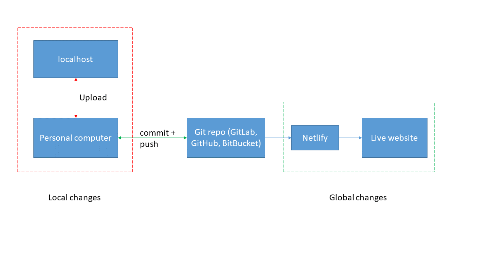

My first website was a part of my undergrad thesis, back in 2011. The website would take a text file as an input, align the input sequence(s) with a manually curated database of snake toxin peptides, and predict which superfamily of snake toxin does the input sequence(s) belong to. I used PHP and Perl for coding, and WAMP for hosting. After I left, my project was heavily modified and incorporated into a webserver called TFTX. I would also give credit to Aukash Kumar (my partner in crime) who carried out a big part of the analyses.
My motivation is different this time though, with the key question being - what do I want to convey using my website? The answer is simple - I want to blog about machine learning, big data, parallel computing, benchmarking, PhD life, code snippets, etc., with focus on using R (mainly) and Python.
As this is my first blog, I will keep it non-technical and run through the steps required to start your own website (like this one), free and compatible with R.
Academic because the majority of your site’s content can be written in R Markdown files. There are other themes such as Hugo Hero which utilises Markdown files. Choose carefully as switching themes later on could be cumbersome. Install the theme in your local repository. For Academic, follow this linkIf you are confused, the following figure will make your life easier - 
I can create an RMarkdown blog post on my local GitHub repo, and render my website locally. When I’m happy, I can commit+push to my GitLab repo. Netlify takes care of the rest. That’s it, that’s all I need to publish my post on my website. It can’t get easier than this.